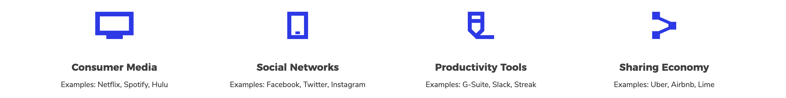

Active Listening for Spotify
Bringing Community back to Music Appreciation
Spotify Active Listening is a premium feature that allows users and artists to DJ/curate for an audience in real time through the act of listening parties. Users listening are able to suggest songs as well as upvote/downvote suggestions from other users to influence the music being played.
This project was completed during Rehack, a five hour hackathon with a focus on improving digital social interaction.
Role:
I worked with the team to help brainstorm functionality of the feature and worked with designers to build and prototype the feature.
Brainstorming Opportunities
As a team, we had to quickly decide on what sort of existing technology we wanted to focus on. Out of all the streams, we decided to look into improving social interaction in consumer media, as it was a space that we were not as familiar with. From here, we decided to focus on Spotify, as it was something we had all used at
Identifying Problem Space
We decided to look into the different touchpoints we could design for and took into consideration how familiar we were with each (as we were working with such a strict time constraint).

Visual Design
Introducing Social Tab
Prototype
Reflection
As this was my first hackathon, I definitely learned a lot through the experience. Working with such a tight deadline stressed the importance of prioritization and compromise in the design process. Additionally, juggling role assignment while being active constantly throughout the project helped me to learn when to ask/offer help and how to be more efficient in my own work.